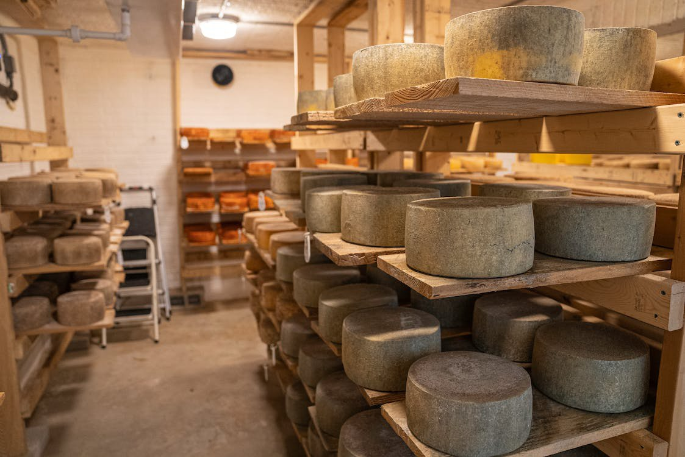

Lesson 22
UNIT 3
Livestock processing technology
BASIC PROCESSING TECHNOLOGIES OF ANIMAL PRODUCTS

Storage and safety of livestock products
Learn the active vocabulary of the Lesson and be ready to
use it in your further work:
Spoilage n
– псування; sour milk – кисле молоко; mold n – цвіль, плісенний грибок; bread dough – хлібне тісто; perishable foods – їжа, що псується; yeast n – дріжджі, закваска; decay n – гниття, розпад; decomposition n
–розкладання; гниття; date n
– термін; sauerkraut n – кисла капуста; soak v – замочувати; усмоктувати;
занурюватися; cure v –заготовляти, консервувати; living tissues – живі тканини; minute size – найдрібніший розмір; ice chest – льодовик, холодильник; fermentation n – бродіння, ферментація; wild yeasts – дикі дріжджі; canned foods – консервовані продукти; nutritive value – харчова цінність; clove n – гвоздика (прянощі); cinnamon n – кориця; eugenol n – хім. сполука евгенол; “corning” – засолювати, консервувати сіллю (м'ясо,
рибу); cook-in-the-can method – метод порційного консервування (по банках);
cook-in-the-kettle method – метод консервування в загальному котлі з подальшою
розфасовкою; fancy grade –вищий ґатунок (екстра); choice grade – кращий ґатунок (відбірний).
Read
and translate the text:
FOOD
STORAGE Food
spoilage is due to the growth of microorganisms in the food. In the course
of
their development these produce, in some cases, harmless products, such as
iectic acid in sour milk or carbon dioxide and alcohol in bread dough made with
yeast; in others harmless but undersirable products, such as the flavour which
mold imparts to bread; while, in still other cases, harmful toxins are produced.
Food preservation has both
hygienic and economic aspects. From the point of view hygiene, food is preserved
in order to prevent the formation of products which are harmful to the body.
Many
essential but perishable foods are preserved for the purpose of prolonging the
period of availability. Oranges or tomatoes supply vitamin C from January to
January, Green vegetables as well as the more stable root vegetables can be
fresh or in cans at any time. Thanks to improved methods of food preservation,
it is now possible for everyone at all times to have clean, wholesome food – a
well-balanced diet. Microorganisms. For
those who have studied bacteriology, the ravages of food by microorganisms make
an old story. In all living tissues microorganisms are found which assist either
in the growth of the plant or animal or in their decay. In addition the air,
water, and all other substances with which food comes in contact contain
microorganisms foreign to the natural food but capable of reacting the solutions
present in it. Thus
any food is subject to either decay or spoilage by the growth of microorganisms.
Our study of microorganisms will confine itself to a description of the
different classes and the conditions which are favourable or unfavourable to
their growth.
There
are three classes – molds, yeast, and bacteria. All are characterized by their
extremely minute size and their wide distribution. Molds.
The conditions for the growth of mold are less rigid than for any other
class
of microorganisms. For this reason we may find well-established settlements of
molds on almost any substances: they are found on acid foods, such as lemons,
oranges or tomatoes; on neutral foods, such as bread and meats; on sweets such
as jellies and jams; and on salty food such as bacon or ham. Low
temperatures retard the growth of mold, but temperatures below that of an
ordinary ice chest (10 to 15 °C) are necessary. Molds must have some moisture. A
dry food will not mold unless it is kept in a damp place. Molds will form in
darkness or light, but many species cease to grow if exposed to bright sunlight.
Circulating air is destructive to mold growth. Yeasts. Yeasts,
unlike molds, will grow only on foods containing sugars. The reaction called
fermentation changes the sugar to alcohol and carbon dioxide with minute
quantities of other products. Although yeasts will grow only in the presence of
sugar, they may be found widely distributed. Bacteria. Although
there are many properties which are characteristic of all bacteria, the
differences in the behaviour of the different kinds of bacteria are greater than
those of the different kinds of yeasts and molds. Bacteria are widely
distributed. Like
yeasts and molds, they may be found anywhere – in the air, water, soil, and in
all foods. In a less acid medium they multiply most rapidly, and, therefore, it
is the less acid foods which are most subject to bacterial decomposition. The
flavours of cheeses, butter, and butter substitutes are also products of
bacterial activity. On the other hand, the spoilage of canned foods, meats,
milks and vegetables is also due to the products of bacterial growth.
Drying. Drying
has been a means of food preservation for centuries and is still used for many
foods. It promotes preservation by removing the water essential for the growth
of all microorganisms. We find in the market dried fruits, milk, meats, and
vegetables, but the varieties of each are few. The
method of drying varies greatly with the food. Foods containing sugar require
less drying than others. Within the last few years, intensive efforts have been
made to produce dried products which are not only clean but also will resemble
fresh foods in appearance and nutritive value. Dried
foods occupy less storage space and may be stored without consideration of
temperature. Most dried foods require soaking before cooking in order to restore
the water lost by drying. The dried foods most commonly used are prunes,
raisins, currants, apples, apricots, peaches, figs, dates, beans, fish, beef,
and mushrooms. Chemical
preservation.
Many foods are preserved by the use of addedsubstances, which destroy or check
the growth of microorganisms. Although manychemicals are known which could be
used to help in the preservation of foods, few are allowed by government
authorities. Canning. Canning
is the most common form of food preservation. Preservation is insured by the use
of sufficient heat to destroy all microorganisms which might develop in the
canned product during storage. It
may be noted that foods of high acid concentration require either less time.
The
cook-in-ihe-kettle method consists
in cooking the food in an open kettle until all has reached sterilization point,
or longer if desired. The food is then packed and sealed in clean sterile jars.
The
cook-in-the-can method describes
itself. Food to be canned is washed, blanched if necessary, cut into suitable
pieces, and placed in either tin cans or glass jars. Hot water, usually
containing either salt or sugar, or both, is added to fill completely the can or
jar, which is placed in a suitable cooker to destroy the microorganisms present.
Tin-canned food is sealed before processing. All food which is commercially
canned in tin cans is heated previous to sealing. Cold
storage.
Temperature is the most important factor influencing bacterial growth.
Pathogenic bacteria do not grow well at temperatures under 3° C. Therefore, meat
should be stored at temperatures that are as cold as possible. Refrigerated
storage is the most common method of meat preservation. The typical refrigerated
storage life for fresh meats is 5 to 7 days. Freezer storage is an excellent
method of meat preservation. It is important to wrap frozen meats closely in
packaging that limits air contact with the meat in order to prevent moisture
loss during storage. The length of time meats are held at frozen storage also
determines product quality. Under typical freezer storage of – 18° С beef can be
stored for 6 to 12 months, lamb for 6 to 9 months, pork for 6months, and sausage
products for 2 months. Freezing.
The rate of freezing is very important in maintaining meat quality, rapid
freezing being superior. If meats are frozen slowly, large ice crystals form in
the meat and rupture cell membranes. When this meat is thawed, much of the
original moisture found in the meat is lost as juice flow from the meat. For
this reason cryogenic freezing (the use of supercold substances such as liquid
nitrogen) or other rapid methods of freezing meats are used at the commercial
level to maintain maximal product quality. It is important to note, however,
that freezing does not kill most microorganisms; they simply become dormant.
When the meat is thawed, the spoilage continues where it left off. Vacuum
packaging.
Oxygen is required for many bacteria to grow. For this reason most meats are
vacuum-packaged, which extends the storage life under refrigerated conditions to
approximately 100 days. In addition, vacuum packaging minimizes the oxidation of
unsaturated fatty acids and slows the development of rancid meat. Curing
and smoking.
Meat curing and smoking are two of the oldest methods of meat preservation. They
not only improve the safety and shelf life of meat products but also enhance the
colour and flavour. Smoking of meat decreases the available moisture on the
surface of meat products, preventing microbial growth and spoilage. Meat curing,
as commonly performed in products such as ham or sausage, involves the addition
of mixtures containing salt, nitrite, and other preservatives GRAMMAR
EXERCISES
I.
Answer the following
questions: 1. What
conditions make mold grow? 2. What
conditions make yeast grow? 3. What
are the products of bacterial activity or bacterial grouth? 4.
What do you mean by drying? 5. What
is the canning process? 6.
What is cold storage in refrigation? 7. What
is the difference between cold storage or freezing? 8.
How long can vacuum packed food last under refrigerated conditions? 9.
Is smoking and curing the same?
II.
Group the following by parts of speech:
Growth,
development, rapidly, harmless, undersirable, hygienic, multiply, possible,
bacteriology, commonly, characterized, neutral, moisture, activity,
destructive, salty, destructive, fermentation, distributed, property,
temperature, greatly, sufficient, pasture. III. Fill in the gaps using the words:
1.
Food preservation has both _________ and economic aspects. 2.
From the point of view of hygiene food is preserved in order to prevent the
formation of products which are __________ to the body. 3.
Bacteria grow very rapidly where conditions are __________. 4.
Bacteria are more difficult to destroy than the other __________. 5.
Considerable success is now being experienced in the __________ of fish and meat
and of many fruits and vegetables by _________ . 6.
New method of freezing and better __________ for frozen products have improved
the flavour and texture of the food. 7.
Within the last years intensive efforts have been made to produce
_________products which are not only clean but also will resemble fresh foods in
_________ and nutritive value. 8.
The temperature in the canning of food depends upon several factors, the number
of microorganisms present in the uncooked food the rate at which ________ can
penetrate the food to be canned. IV.
Choose the correct form in bold:
1.
Any food is/are subject
to either decay or spoilage by the growth of microorganisms. 2.
Microorganisms must
be/may multiply
in two ways. 3.
A spore differ/differs from
the microorganisms from which it comes in being more sistant to conditions
unfavorable to growth. 4.
Spore – bearing organisms are more/most difficult
to destroy than those which multiply by simple cell division. 5.
Molds must/can have
some moisture. 6.
The mixture of various kinds of yeasts present everywhere in the air is/are
called wild
yeast. 7.
Like yeasts and molds, bacteria may/must be
found anywhere – in the air, water, soil and in all foods. 8.
The method of drying vary/varies greatly
with food. 9.
Many foods are/is
preserved by
the use of added substances, which destroy or check the growth of
microorganisms. 10.
Canning is the
most/more common
from of food preservation. V.
Ask questions to have following answers: 1.
Carbon dioxide inhibits the grouth of bacteria. 2.
These techniques slow deterioration processes and allow you to enjoy foods in a
variety of forms around the year and round the globe. 3.
Low temperatures reduce or stop processes that contribute to the deteriotion of
products. 4.
Hydrocooling
means
cooling with water. On the other hand, milk is cooled in a refrigerated tank on
the farm. 5.
This process inactivates enzymes that cause undesirable changes when plant cells
are frozen.
VI.
Agree or disagree with the statements, using the following word combinaations: I
quite / completely / agree, I can’t agree, I think it is not so, it is wrong, on
the contrary:
1.
One of the oldest ways to preserve food for delayed use is fermenting and
pickling. 2.
Slowing humidity is the primary goal in food preservation. 3.
Transporting foods in controlled atmosphere allows the transporting of cut
lettuce without the edges turning brown. 4.
Hydrocooling
is
the process of chilling or keeping cool. 5.
When crops are harvested in the field, their temperatures are between 30 and
40o F. 6.
Fermentation means
lowering the moisture content to inhibit growth of
microorganisms.
VII.
Give the forms of the Present, Past, Future (Continuous) Tenses of Active and
Passive Voices:
a)
to digest, to regulate, to smile, to hope, to help, to learn, to stop, to plan,
to visit, to offer, to prefer, to discuss, to study, to enjoy, to play, to cry;
b)
to be, to have, to do, to go, to sit, to begin, to become, to make, to eat, to
teach, to write, to leave, to tell, to think, to take, to get, to buy, to read,
to say, to bring, to forget, to pay.
VIII. Match the word or words with the definition:
IX. Translate into English:
1.
Як відомо, харчові продукти швидко псуються. 2.
Для того, щоб довше зберегти харчові якості продуктів, їх консервують,
засолюють, коптять, заморожують. 3.
Псуванню харчових продуктів сприяє ріст мікроорганізмів. 4.
Мікроорганізми поділяються на декілька класів: пліснява, дріжджі, бактерії.
5.
Зазвичай пліснява утворюється в темряві, але іноді й на світлі. В
більшостівипадків пліснява припиняє рости, якщо вона піддається сонячному
освітленню. 6.
Смак сирів та масла змінюється під дією бактерій. 7.
З іншого боку, псування консервованих продуктів – м’яса, молока, овочів – також
відбувається під дією росту бактерій. 8.
Найсприятливіший спосіб зберігання харчових продуктів у холодильниках;
в цьому випадку, смак, вигляд і поживна цінність
змінюється у незначній мірі.
X.
Choose the right variant: 1.
…is a chemical change that involves foaming as gas is released. a)
fermentation b)
refrigeration c)
hydrohydrate 2.
Table grapes are fumirated with … to control mold. a)
carbohydrate b)
sulfur dioxide c)
salt 3.
… inhibits the growth of bacteria. a)
sulfur dioxide b)
oxygen c)
carbon dioxide 4.
… is the scalding of food for a brief time before freezing it. a)
freeze dying b)
dehydrofrozen c)
blanching 5.
Fruits and vegetables should be consumed within … after freezing. a)
one year b)
one month c)
one week 6.
Dried soup mixes, packaged salad dressing, spices, and brief fruits are foods
that … been dehydrated. a)
has b)
having c)
have 7.
Never retiortable pouches always … protection from light, heat, moisture, and
oxygen transfer, all in one wrapping. a)
have provided b)
privedes c)
are providing 8.
The cost of each of the processes and techniques … above is different and must
be taken into account by processing plants. a)
has mentioned b)
mentions c)
is mentioning 9.
Glass or metal containers are more airtight than ... ones. a)
iron b)
plastic c)
wood 10.
Retortable
pouches are
flexible packages consisting of … layers of film (or plastic) with a layer
of foil between them. a)
two b)
three c)
four